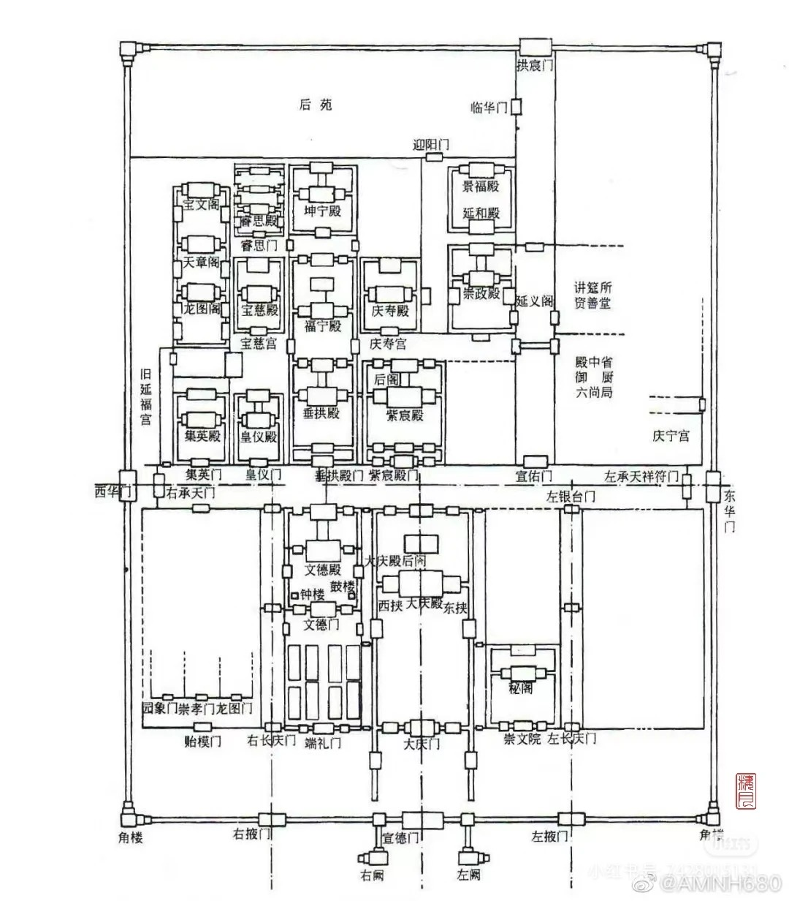
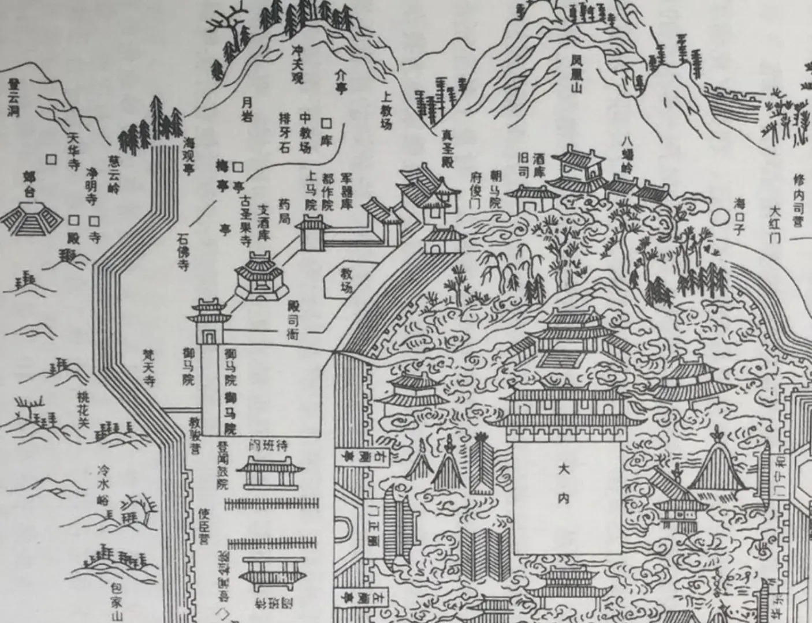
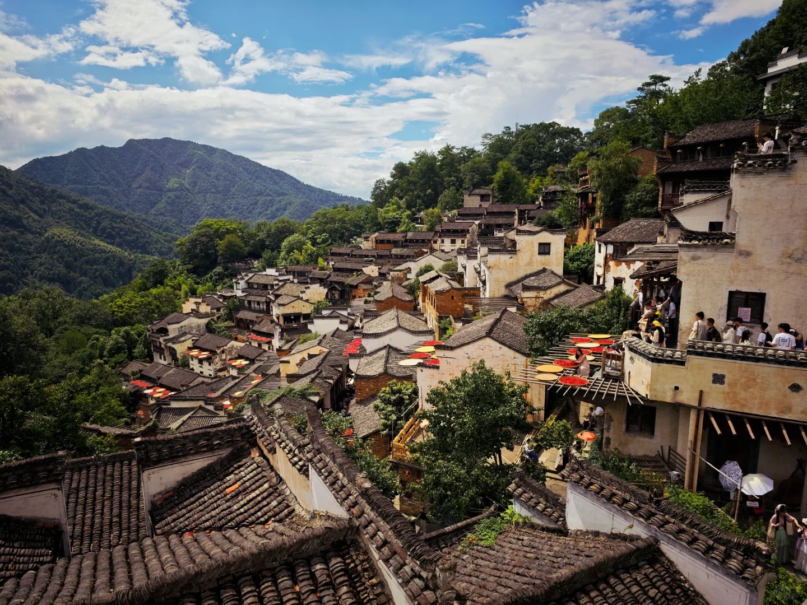
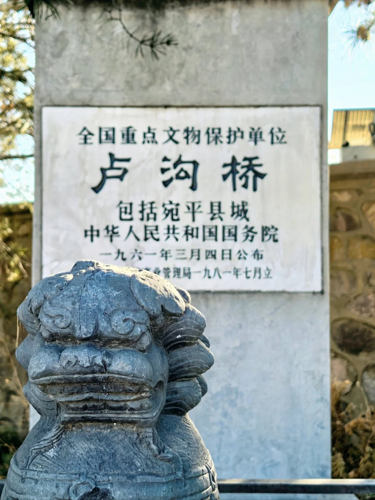

历史背景
宋朝是中国古代建筑技术与理论并重的集大成时期。在唐代雄浑风格的基础上，宋代建筑转向精致典雅、富于理性，木构技艺登峰造极，并颁布了第一部官方建筑规范《营造法式》，标志着中国建筑进入高度模数化、标准化的成熟阶段。
- 《营造法式》颁布：李诫编修的建筑巨著，系统总结技术、工料、样式，影响后世深远
- 木构技艺巅峰：斗拱体系精巧复杂，结构作用与装饰效果完美结合，出现减柱、移柱等创新
- 城市与商业建筑：打破里坊制，出现开放式街市，商铺、酒楼等商业建筑形式蓬勃发展
宋朝建筑工程数据可视化
宋朝·建筑类型统计
注：基于历史文献记载与考古发现统计，反映出宋朝建筑活动的一个显著特点：民居建筑的数量规模远超其他类型，这凸显了宋代城市经济繁荣、市民生活兴盛以及建筑业向民用领域深度拓展的时代特征。
宋朝·建筑材质分析
注：基于宋朝建筑遗存与文献记载分析，木材是绝对主导的结构与装饰材料，砖瓦在佛塔、城墙等构筑中应用显著增加。
宋朝代表性建筑成就
点击任意卡片查看详细信息

北宋汴京皇宫
北宋汴京宫城，布局严整而紧凑，殿阁组合精巧，水系贯通其间，开创了宫城与繁华市井紧密相连的独特格局，集中体现了宋代建筑的理性精神与文治风貌。

南宋临安皇宫
南宋临安皇城，依托凤凰山麓而建，宫苑与西湖山水相依，布局灵活而富有园林意趣，在江南的灵秀中蕴藏着偏安一朝的审慎与精致。

婺源乡村院落
宋代江南乡村的典型居住形态，以“中轴对称、院落递进”构建家族秩序，将农耕文明与理学文化融入白墙黛瓦之间，成为传统乡土社会的居住典范。

卢沟桥
卢沟桥是世界现存最早、保存最完善的古代敞肩石拱桥之一，建于金代（与南宋同期），是金朝在华北地区的重要交通工程，以其精美的石狮雕刻和坚固的结构闻名。